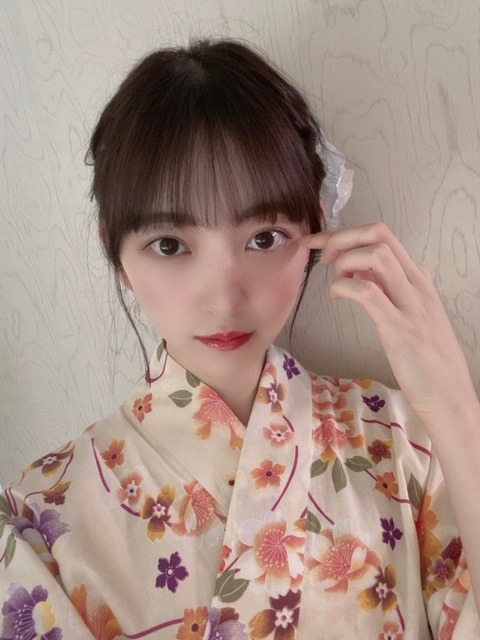

2020/0815Sat梨があるところは安全
夏ですね〜

わたしはお家でもこの盆踊りを
踊って夏感じてます！
みなさんもぜひ覚えて一緒に踊りましょ〜♩

♡

CDTV ライブライブもありがとうございました
CDTV ライブライブもありがとうございました
おんぷちゃんヘアしました
みなさんが好きって言ってくれるから
したのー^o^
絢音もいつも褒めてくれる♩
またします！
久しぶりの 海原〜 披露で
ちょっぴり緊張しました。笑
またいつか披露できたらいいなぁ
フロントに立たせていただけた
唯一の夏曲なので大事にしたいです

↑↓両方 her lip to の♡

今日は18時から
MUSIC FAIRに出ます
みてね〜
質問返しします〜
質問ください
では
2020/08/15 16:48


コメント(624)
(´_｀；)
※本当の話です。。この手の話ではさすがにボケません。。
で、今もほぼ何も考えつかず………。
ひねり出したコメントは、『梨のある所？』
じゃあ、ふ●っしーの隣で。
ふなっしーの隣、空いてるなっし～！ で。
さっきね、お腹が空いたからめっちゃ久しぶりにカップの焼きそばを食べたんだぁ～♪(^ ^)ごつ盛りというものでさ、入っている麺が200gと小腹を満たすのには丁度良い量(よくあるものだと悲しくなる程に麺の量が少ない(苦笑))で、半分はそのまま、もう半分は入っていたマヨネーズをかけて味変と、普通においしく完食したんだよね～♪(^ ^)
みおちっちは可愛いのぅ～↑(^ ^)(らぶあやみおの可愛いさは間違いない♪)
納得。
浴衣いいなー！
または、どこに行きたい？
CD
質問
質問2
CDTVのとき、先輩方のはけてゆく姿がノリノリでかわいかったと、早川のせーらちゃんがブログで書いていました。わたしは画面の見えないところで真夏たんあたりがこけて、桟橋から落ちないかハラハラしていましたが、実際はどんな感じだったのでしょう。あの桟橋は狭くなかったですか？
使ってる柔軟剤教えてください！
ハイ^ - ^応援してます^ - ^いっぱい
今年はマスクしないといけないんでね
それが大変だよね。
マスクは適度にはずさないとね
・ ”エンド・オブ・ウォッチ"を観たよ(^^)
ロス市警の二人の警官を軸に話しが進んでいくんだけど、この作品もラスト30分ぐらいで物語が動いて、一気に盛り上がってくる作品だったかな。笑
それまではドンバチも少なかったから、いまいち物足りなかった(._.)
主人公や周りがカメラで撮影しながら話しが進んでいくファウンド・フッテージ(意味は自分で調べて←)って手法を使ってるらしい！やたら撮影してたから、それも伏線かと思ったけど、多分違うのかなーラストは..まさかあんな展開になるとは..フラグは立ってたけど(・.・;)興味があったら未央奈も是非(^^)
・また明日から頑張るぞ(๑•̀ㅂ•́)و✧バンテリンのひざサポーターも無事買いました(←)
・おやすみおなー
(すでに答えたことがあるようなものだったらごめんなさい)
みおなちゃんは骨格診断とか顔タイプ診断とか受けたことありますか？？
herlipto のワンピ似合ってて可愛いです！♡
質問ですが、髪の毛乾かす前にクリームとかオイルとか付けてますか？中々これ！ってものに出会えなくて、、
おすすめがあれば教えてほしいです！
最近ホンマにずっと暑いから、体調崩してないかな？？心配やわぁ。この前のモバメで未央奈心配してくれてたよねぇ。その優しさが嬉しいしホンマにいい子だなぁ～って思うねんなぁ
質問やねんけど……上でも書いてるけどモバメだったりブログだったり、テレビとか雑誌で元気な笑顔や可愛い未央奈を見ると僕はめっちゃ元気になるし、さぁ！１日頑張ろうって気持ちになるねん。僕だけじゃなくて、僕ら未央奈推しのファンの存在は未央奈に元気をあげれてますか？未央奈の支えになれていますか？？未央奈からもらってばかりだから……未央奈になんとか元気を届けたいな。支えになれたらな。嫌な事があった時に少しだけでも元気を出してもらえる存在になれたらな。っていっつも思ってます
ホンマに……未央奈大好きです
みなみおなが好きすぎるので！！
24時間テレビ長い時間頑張って下さい。
未央奈さんに質問です。
僕未央奈さんにファンレター書いたのですが読みましたか？
おんぷちゃんヘアーお似合いです。
最後にコロナと熱中症に気を付けてね。未央奈さんがなったらショック 。大好き ♥️❤️です。
こんにちは、未央奈ちゃん～
昨日ね、頑張って１人で美容院に行けて、『胸キュンスカッとの時の未央奈ちゃんカット』で切って貰ったんだ～♡
未央奈ちゃんとお揃いなのが何よりも嬉しかったし、とってもカワイイ髪型に切って頂いて、私も少しだけ自信がつけました！笑笑
浴衣姿を見ていると、『夏だなあ～。笑笑』と感じます♡そして、落ち着きます♡どの写真もカワイイけれど、私は個人的には３枚目のお写真が好きというか気になっちゃいます♡笑笑
私も芸能界に入れたら、いつか一緒に『和歌山県の白浜とか、アドベンチャーワールドさんととれとれ市場さんに一緒に行きたい』です♡笑笑
やったあ～( 〃▽〃)質問回だ～♡これも大好き～♡未央奈ちゃんに聞きたい事、いっぱいありすぎて永遠に尽きないと思うし、終わらない気がする～！あはは～笑笑
#未央奈ちゃんに質問
・自分自身を見失わない、自分という芯を強く持って、自分自身とはぐれないように心掛けている事、人に簡単には流されない秘訣というか、又はモチベーションとかがあったら是非是非教えて下さい♡
・腹筋は１回につき、何回くらいされているんですか？
今はこれくらいしか思い付けなくて、とっても悔しい～。笑笑
いつも、『私は私のままでいくけれど、いつも大好きな未央奈ちゃんだと思って、なりきって？笑笑 生きています。笑笑』
髪の毛を未央奈ちゃんと同じに切って貰ったら、何だか少しだけ自信と勇気が湧いてこれたので本当に良かったです♡笑笑
♡未央奈ちゃんの事、本当に大好き♡加登 愛
未央奈さんお疲れ様です
今年中にやりたいことはなんですか？
あと今ハマっていることも教えてください
好きな猫の種類教えてください
この間のジコチュー 未央奈ちゃん可愛かった！
私は受験生なので毎日勉強が忙しく、
あまりコメントできず、すみません！
質問です！
未央奈さんが使っている柔軟剤を
教えてください！
未央奈さん大好きです
歌番組もちゃんとチェックしてます！
では
浴衣姿とてもとても素敵)^o^(
下のほうにある水玉？豹柄？の服もおしゃれ
24時間TVも出るのね！楽しみー♩
梨のある所安全となると、私の家も安全てことね！
今日は朝夜食べたよー
未央奈ちゃんも梨食べて元気に過ごしてね〜(*´ω`*)
最近一番嬉しかったことは何ですか？
未だに忘れられないほど大ウケした質問はありますか？
コンビニに行ったらついつい買っちゃうものはありますかーーー？？
堀ちゃん大好きです。どうしたらいいですか？？
ブログ更新ありがと！！
おんぷちゃんヘア とーってもかわいい！！！！！
☆質問です！！☆*°
乃木坂の中で、みおなちゃんが誰にも負けないってものは何ですかー？？
口もとの表情が特に個性的で表現力あるかんじもキュートだったり
貴公子の女子版的なお姫様感もありつつスポーティーなアクティブさも持ち合わせているようなとこも素敵ですね
盆踊りも着物がしっくり可愛く似合ってダンスも良いかんじ控え目でも光ってますね
ブログ更新ありがとう！
浴衣未央奈めっちゃ好き！
花飾りめっちゃ似合ってる！
音符ちゃんヘアも好き！
質問いいですか？
好きな香水教えてください！
これからもずっと応援してる！
がんばれー！
コメント遅れてゴメン
質問！
夏の夕方に聴きたくなる曲って何？
これからも応援してるよ！
体調には気をつけてね！
by未央奈推しのブラックコーヒー
みおたん、かわゆくてすきぃ～♥️
らびゅ～♥️
質問です！
いっちばん好きな髪色はなんですか？
浴衣姿にテンション上がりすぎて前のブログにコメントしてしまいましたが、改めてめっちゃ可愛いですー！(o^^o)
堀ちゃんの浴衣姿は特別だなぁ、個人的にショートに浴衣の堀ちゃんっていうのがまたドストライクです(^^)
ちょっとだけ口角が上がってるお顔、可愛すぎです！
こんな可愛い表情見たら夏祭り行きたくなっちゃいます、堀ちゃんと一緒ならですが( ´ ▽ ` )笑
わたがしになりたい〜
遅ればせながらCDTVライブライブも観てましたよー！
久々のジコチュー見られて嬉しかったです(o^^o)♩
やっぱり「入江の向こうに広がる海原」に向けてテンションをピークに持っていっている自分がいます( ´ ▽ ` )笑
今回もバチッと決まってました！堀ちゃんのウインクは達人技ですね！なめらか！
あの立ち位置、あのタイミングはもう堀ちゃん以外考えられません、僕にとっても大切な曲でかけがえのないシーンです(o^^o)
おんぷちゃんヘアもめっちゃ可愛かったです、プール沿いの涼しげな雰囲気にキュートな感じがピッタリでした(o^^o)♩
心なしか堀ちゃんスタートで、メンバー内にも流行り始めてるような気がします、気のせいかな？( ´ ▽ ` )
「好きって言ってくれるからしたのー^o^」って、可愛すぎます、愛おしすぎます…(o^^o)
堀ちゃんを好きでいることって幸せだなぁと改めて思わせてくれる一言ですよ(^^)♩
毎日必ず何かしらの発信をしてくれるし、間違いなくほんとに毎日が堀ちゃんで楽しい( ´ ▽ ` )♩
これからもずっと好きです堀ちゃん(o^^o)
夏ですねぇ、めちゃくちゃ暑い、夏を感じられて嬉しいですが( ´ ▽ ` )
さすがにこんなに暑すぎると心配になっちゃいます、体調崩したりされてないでしょうか？(>_<)
果物は水分も糖分もビタミンも摂れていいですよね、梨とかたくさん食べましょ〜( ´ ▽ ` )♩
あと個人的なブームがモロヘイヤです、王様の野菜と呼ばれる何やら凄そうなやつです(^^)笑
さっと茹でてひたすら刻んで粘りを出して、酢と醤油で食べるとあっさりしてて、バテて食欲が落ちた時でも食べやすいです(o^^o)
βカロテンなど栄養もかなり豊富で、免疫力UPにいいみたいです、よかったら食べてみてください( ´ ▽ ` )
質問、好きな言葉やフレーズはなんですか？
歌詞とか名言とかなんでも、好きなのたくさんあると思いますが、パッと思い浮かんだもので(^^)
では！またコメントさせてくださいー！
もう美の暴力ですよ！みおなちゃん！
彼女に入浴剤をプレゼントしたいのですが、オススメの入浴剤はありますか？
ブログ更新ありがとう、毎回、癒されています。
浴衣姿、和風で素敵です。おんぷヘアー、とっても可愛いです。私服、色気があってちょっとドッキリです。どれも大好き。
music fairのコメント、面白かったよ。
兎に角、良い体調で過ごしてくださいね。
乃木坂46と頑張ってるcuteでsmartな未央奈ちゃんを応援しています。
海原未央奈さん最高だったよ( ¨̮ )︎︎♡
ほんと可愛かった〜♡
わたしの母も未央奈ちゃんのこと好きなの。
おんぷちゃんヘアもめちゃくちゃ可愛いね
って一緒に見てたんだ〜(*¨*)
これからも応援してます(❁ᴗ͈ ᴗ͈)”
質問
3期生とのエピソードあったら教えてください！
与田ちゃんとのエピソードもあれば聞きたいです！
未央奈ちゃんのトークが一番面白かった!
ポーズお願いします。
僕的には？シャークポーズ、丸ポーズが
みたいです！
●何県出身ですか？
●堀未央奈の名前の由来はなんですか？
やっぱり、何でも似合いますね
もし、1日分の汗を溜めてはかったらどんだけあるんだろうってぐらい汗かかない？w
見えない目撃者ってサスペンスもののやつだよね？
面白かった？感想教えておくれ～☆
おー、サマーカットしたプティくん！さっぱりして良いね！
暑いからすっきりして楽になっただろうね♪
もしや未央奈がカットしてあげたとかじゃないよね？w
そうだったらすごい上手いなーって思った(゜▽゜*)
24時間テレビのぐるり音頭 動画見たよ！！しなやかな踊りや、浴衣姿が美しすぎて見惚れてた〜〜♡
未央奈ちゃんのおんぷちゃんヘア大好きだから、CDTVでまたおんぷちゃん見られて嬉しかったな❕ジコチューの海原〜の所、毎回とっても楽しみにしてるの！今回も超絶可愛かった！ウインクからのぷく顔が最高☺︎☺︎
未央奈ちゃんに質問〜〜
最近お気に入りのコスメってありますか？
あと1ヶ月ほどで面接試験があるのですが、緊張しない方法ってありますか？
未央奈ちゃんにまた会える日まで毎日頑張ります(；；)❤︎いつもブログなどのSNS更新してくれてありがとう！今の時期暑いから無理せずにお仕事頑張ってね！！
ひめな
コメントする